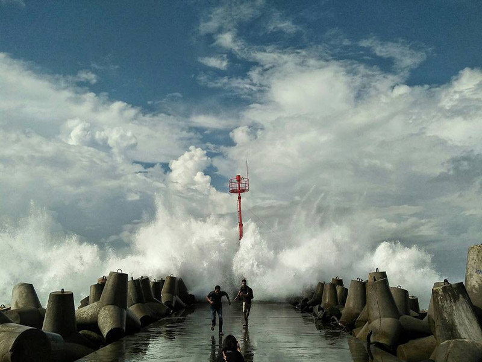
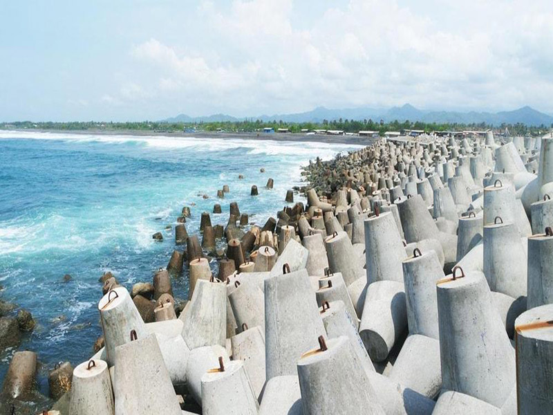

Pantai Glagah Indah adalah salah satu pantai yang menjadi objek wisata di provinsi Daerah Istimewa Yogyakarta. Pantai Glagah Indah merupakan salah satu pantai di Yogyakarta dengan hamparan pasir yang berwarna hitam dan banyak mengandung pasir besi. Pantai Glagah Indah memiliki akses yang baik. Selain tidak jauh dari jalan provinsi, jalan menuju pantai dan jalan di sepanjang pantai Glagah sudah beraspal.
Sebelum memutuskan untuk berkunjung ke salah satu pantai di Kulon Progo ini, sebaiknya kamu mencari tahu terlebih dahulu lokasinya. Hal ini ditujukan agar kamu tidak kebingungan saat perjalanan menuju ke sana. Pantai glagah berlokasi di kawasan Glagah, Kecamatan Temon, Kabupaten Kulon Progo. Untuk menuju ke kawasan ini, kamu bisa memilih salah satu dari dua rute yang tersedia. Perjalanan menuju pantai ini dapat kamu tempuh menggunakan jalur darat dengan menggunakan kendaraan pribadi atau pun angkutan umum.
Rute pertama dari Jalan Bantul-Palbabang ambil arah kanan menuju jalan Srandakan melalui jembatan Srandakan sampai bertemu lampu merah, belok ke kiri kemudian kamu sudah sampai di kawasan Pantai Glagah. Rute kedua dari Jalan Wates-Sentolo-Wates kota-Purworejo ambil arah ke kiri lalu ikuti arah atau papan petunjuk menuju ke pantai glagah. Waktu tempuh yang dibutuhkan untuk sampai ke pantai glagah dari kedua rute tersebut kurang lebih adalah satu jam. Jalanan yang dilewati pun merupakan jalan aspal yang sangat lancar dan bagus.
Sebagai salah satu pantai yang paling hits di kawasan Kulon Progo, pantai glagah banyak dikunjungi oleh banyak wisatawan setiap hari. Hal ini dikarenakan pantai ini memiliki keunikan berupa pasir pantai berwarna hitam yang didominasi dengan pasir besi. Gundukan pasir berwarna hitam ini sangat menarik perhatian bagi para pencinta motocrossatau ATV untuk menguji adrenalin nya di sana.
Bagi yang suka fotografi, kamu juga bisa membidik foto pantai untuk diunggah ke akun sosial media. Pasti kamu makin penasaran dengan keunikan pantai ini. Untuk itu kamu harus mengetahui jam operasional pantai glagah. Jadi, pantai ini buka selama 24 jam non stop sehingga kamu bisa mengunjungi pantai ini kapan saja kamu mau.